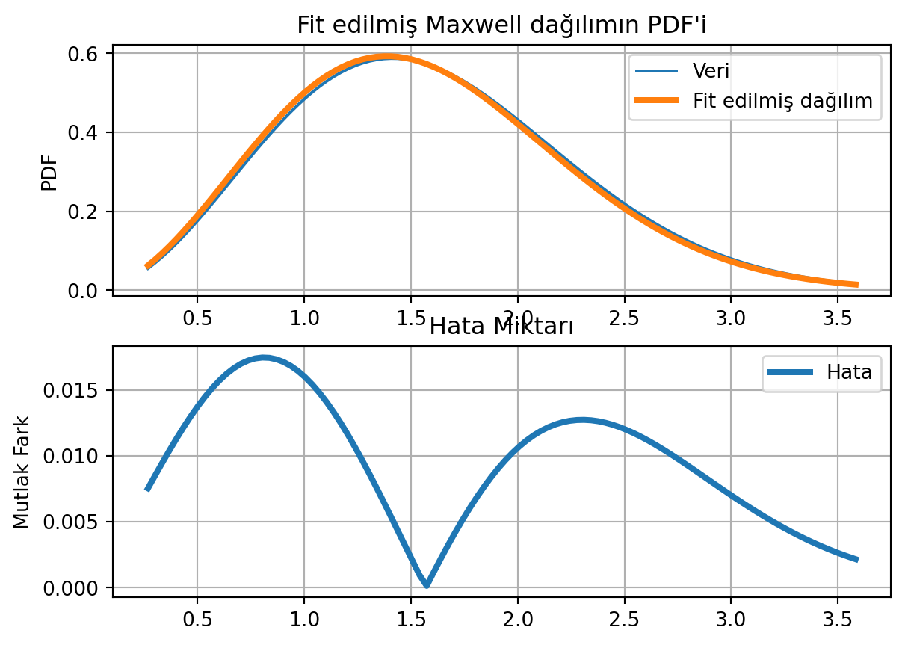

Yaklaşık 13 kesiklik ve 98 sürekli dağılım scipy.stats modülünde bulunmaktadır. Daha ayrıntılı bilgi için scipy.stats dokümantasyonuna bakabilirsiniz.
Rastgele değişkenler classları için aşağıdaki örneği inceleyelim.
from scipy import statsimport numpy as npimport matplotlib.pyplot as plt# Normal DağılımX= stats.norm(1, 0.5) # ortalama 1, standart sapma 0.5 olan normal dağılım# X bir objeprint(X)# X'in ortalama ve standart sapmasıprint(f"\nX ortalama: {X.mean()}, X standart sapma: {X.std()}")# X'in medianıprint(f"\nX median: {X.median()}, Varyansı: {X.var()}")# X dağılımının istatistiği, Birinci değer ortalaması, ikinci değer varyansıprint(f"X.stats(): {X.stats()}")# Pdf ve Cdf Fonksiyonlarıprint(f"\nPdf(x=0, x=1, x=2): {X.pdf([0,1,2])}")print(f"\nCDF(x=0, x=1, x=2): {X.cdf([0,1,2])}")# PDF Fonksiyonunu çizelimx = np.linspace(-2, 4, 100)plt.title("Normal Dağılım")plt.plot(x, X.pdf(x))plt.ylabel("PDF")plt.show()plt.close()# CDF Fonksiyonunu çizelimx = np.linspace(-2, 4, 100)plt.title("Normal Dağılım")plt.plot(x, X.cdf(x))plt.ylabel("CDF")plt.show()plt.close()
<scipy.stats._distn_infrastructure.rv_continuous_frozen object at 0x7fc6a0564700>
X ortalama: 1.0, X standart sapma: 0.5
X median: 1.0, Varyansı: 0.25
X.stats(): (1.0, 0.25)
Pdf(x=0, x=1, x=2): [0.10798193 0.79788456 0.10798193]
CDF(x=0, x=1, x=2): [0.02275013 0.5 0.97724987]
Güven Aralığı (Confidence Interval)
Güven aralığı, bir parametrenin (genellikle bir ortalama veya oran) bilinmeyen gerçek değerinin bir tahmin aralığıdır. Bu tahmin aralığı, örneklem büyüklüğü, standart sapma ve güven seviyesi gibi faktörlere bağlı olarak hesaplanır.
Alıştırma 1
Örneğin, bir makinenin parçalarının ortalama uzunluğunu tahmin edelim. Makine parçalarının uzunluğunu normal dağılıma sahip olduğunu varsayalım.
100 parçalı bir örneklemimiz olsun. Parçaların dağılımının ortalaması ile makinenin gerçek uzunluğunun tahminini yapabiliriz. Ancak, bu tek bir tahminin güvenilirliği hakkında bir fikir vermez. Bu nedenle, bir güven aralığı belirleyerek gerçek uzunluğun bu aralıkta olma olasılığını hesaplayabiliriz.
Örneklem ortalaması 7 cm ve standart sapma 0.5 cm olsun. Güven seviyesini %95 olarak belirlediğimizde, bir normal dağılım tablosu kullanarak ortalama uzunluğun %95 güven seviyesinde bulunabileceği aralığı hesaplayabiliriz.
Örneklemin büyüklüğüne (\(n=100\)), standart sapmasına (\(\sigma=0.5\)) ve güven seviyesine (\(\alpha=0.05\), %95 güven indeksi) ihtiyacımız var.
Z-tablosu kullanarak, güven seviyesine karşılık gelen z-puanını bulun. Örneğin, %95 güven seviyesine karşılık gelen z-puanı 1.96’dır.
Z-tablosu genellikle, standart normal dağılımın kuyruk altındaki alanını bulmak için kullanılır. Örneğin, bir z-değeri verildiğinde, z-tablosu kullanılarak, z-değerinin solundaki kuyruk altındaki alanın yüzdesi belirlenebilir.
Z-tablosu, matematiksel hesaplama yapmadan kuyruk altındaki alanların bulunmasına yardımcı olduğu için çok kullanışlı bir araçtır. Ancak, tablonun doğru kullanılması için, normal dağılım varsayımı ve z-değerinin doğru hesaplanması gereklidir.
Örneklem ortalamasının standart hatasını hesaplayın.
Standart hata, \(\sigma/\sqrt{n} = 0.05\) formülüyle hesaplanır.
Güven aralığı, $ {x} z /$ formülüyle hesaplanır. Bu durumda, güven aralığı \(7 \pm 1.96 \times (0.05) = 6.9, 7.1\) olarak hesaplanır.
Bu hesaplama sonucu, güven aralığı (6.9 cm, 7.1 cm) olarak bulunur. Bu makine parçalarının gerçek uzunluğunu %95 güven seviyesinde bu aralıkta bulabileceği anlamına gelir.
Uzunluk = \(7 \pm 0.1\)
from scipy import statsX= stats.norm(7, 0.5) # ortalama 7, standart sapma 0.5 olan normal dağılım# interval ile 0.95 yüzdelikteki güven aralıklarını bulalım.print(f"%95 güven aralığı min: {X.interval(0.95)[0]}")print(f"%95 güven aralığı max: {X.interval(0.95)[1]}")print(f"Yani ortalama ort(X) = 7 ± {X.interval(0.95)[1]-X.interval(0.95)[0]}")print("-"*20)# interval ile 0.999 yüzdelikteki güven aralıklarını bulalım.print(f"%95 güven aralığı min: {X.interval(0.999)[0]}")print(f"%95 güven aralığı max: {X.interval(0.999)[1]}")print(f"Yani ortalama ort(X) = 7 ± {X.interval(0.999)[1]-X.interval(0.999)[0]}")
%95 güven aralığı min: 6.020018007729973
%95 güven aralığı max: 7.979981992270027
Yani ortalama ort(X) = 7 ± 1.9599639845400532
--------------------
%95 güven aralığı min: 5.354736634254053
%95 güven aralığı max: 8.645263365745963
Yani ortalama ort(X) = 7 ± 3.2905267314919104
Alıştırma 2
Şimdi öğrendiğimiz tüm bu fonksiyonları Normal, Maxwell ve Poission dağılımları üzerinde görelim.
import numpy as npimport matplotlib.pyplot as pltfrom scipy import stats# Büyük grafik çiz fonksiyonudef plot_rv_distribution(X, axes=None):#Plot the PDF or PMF, CDF, SF and PPF of a given random variable X# Aralıkları bul x_min_999, x_max_999 = X.interval(0.999) x_min_95, x_max_95 = X.interval(0.95)# Aralıkların dizisini oluştur x999 = np.linspace(x_min_999, x_max_999, 1000) x95 = np.linspace(x_min_95, x_max_95, 1000)# Eğer pdf çiziyorsanifhasattr(X.dist, "pdf"): axes[0].plot(x999, X.pdf(x999), label="PDF") axes[0].fill_between(x95, X.pdf(x95), alpha=0.25) # 0.95 güven aralığını taraelse: # Eğer pmf çiziyorsan x999_int = np.unique(x999.astype(int)) axes[0].bar(x999_int, X.pmf(x999_int), label="PMF")# CDF Grafiği axes[1].plot(x999, X.cdf(x999), label="CDF")# SF Grafiği (Aynı CDF Grafiğinde) axes[1].plot(x999, X.sf(x999), label="SF (1-CDF))")# PPF Grafiği axes[2].plot(x999, X.ppf(x999), label="PPF (Quantile Func.)")for ax in axes: ax.legend()# -----fig, axes = plt.subplots(3, 3)# -----X = stats.norm() # Normal dağılımX2= stats.maxwell() # Maxwell dağılımı #X = stats.f(2, 50) # F dağılımıX3 = stats.poisson(5) # Poisson dağılımı# Plotplot_rv_distribution(X, axes=axes[0, :])axes[0, 0].set_ylabel("Normal dist.")plot_rv_distribution(X2, axes=axes[1, :])axes[1, 0].set_ylabel("Maxwell dist.")plot_rv_distribution(X3, axes=axes[2, :])axes[2, 0].set_ylabel("Poisson dist.")
Text(0, 0.5, 'Poisson dist.')
Dağılıma Değer Atama (Sampling)
Obje olarak elde edilen dağılımlara ait değişkenlere rastgele sayı ataması yapabiliriz. Bunun için oluşturduğumuz dağılım objesinin rvs() fonksiyonunu kullanırız.
Sürekli dağılımlar için rv_continuous classını kullanılır.
Süüreksiz dağılımlar için rv_discrete classını kullanılır.
Her iki classı kullanarak rastgele değer ataması (random sampling) yapabiliriz.
from scipy import stats# Normal Dağılım Objesi OluşturX= stats.norm(1, 0.5)# Normal dağılım objesine rastgele 5 değer atamaprint(f"Rastgele 5 sayı atama:\n{X.rvs(5)}")
Rastgele 5 sayı atama:
[1.49238513 1.22186175 1.1624073 0.7776757 1.16087282]
Alıştırma 3
Öğrencinin t dağılım, chi-kare dağılım ve eksponansiyel dağılım üzerindeki rastgele örneklemeyi inceleyelim.
import numpy as npimport matplotlib.pyplot as pltfrom scipy import stats# Büyük grafik çiz fonksiyonudef plot_dist_samples(X, X_samples, yLabel=None, ax=None):# Plot the PDF and histogram of samples of a continuous if ax isNone: fig, ax = plt.subplots(1, 1, figsize=(8, 4)) x_lim = X.interval(.99) x = np.linspace(*x_lim, num=100) ax.plot(x, X.pdf(x), label="PDF", lw=3) ax.hist(X_samples, label="samples", density=True, bins=75) # normed is deprecated ax.set_xlim(*x_lim) ax.legend()if yLabel: ax.set_ylabel(yLabel)return axfig, axes = plt.subplots(3,1)N =2000# Student's t distributionX = stats.t(7.0)plot_dist_samples(X, X.rvs(N), "Student's t dist.", ax=axes[0])# The chisquared distributionX = stats.chi2(5.0)plot_dist_samples(X, X.rvs(N), r"$\chi^2$ dist.", ax=axes[1])# The exponential distributionX = stats.expon(0.5)plot_dist_samples(X, X.rvs(N), "exponential dist.", ax=axes[2])plt.show()
Fitting (Uydurma)
Bir dağılımın veriye uydurulması (fitting) veriye en uygun dağılımı bulmaktır.
scipy.stats modülü, veriye en uygun dağılımı bulmak için fit() fonksiyonunu kullanır.
fit() fonksiyonu, veriye en uygun dağılımı bulmak için maksimum olabilirlik yöntemini kullanır.
from scipy import statsimport numpy as npimport matplotlib.pyplot as plt# Maxwell dağılımıX = stats.maxwell() # X = stats.chi2(df=5)# 0.99 güven aralığını bulx_lim = X.interval(.99)# 0.99 guven araliginda toplam 100 sayı oluşturx = np.linspace(*x_lim, num=100)# Rastgele 1000 sayiyi X dagiliminda oluşturX_samples = X.rvs(1000)# Her sayiya kucuk bir gurultu (distortion) ekleme#X_samples = X_samples + np.random.rand(len(X_samples)) * 0.1# Fit etmeparams = stats.maxwell.fit(X_samples)print(f"Fit edilmiş parametreler: {params}")# Parametreleri kullanarak yeni bir dağılım oluşturmaX_fitted = stats.maxwell(*params)# Plotfig, ax = plt.subplots(1, 2, figsize=(12, 4))ax[0].plot(x, X.pdf(x), label="Veri")ax[0].plot(x, X_fitted.pdf(x), label="Fit edilmiş dağılım", lw=3)ax[0].legend()ax[0].set_title("Fit edilmiş Maxwell dağılımın PDF'i")ax[0].set_ylabel("PDF")ax[1].set_title("Hata Miktarı")ax[1].plot(x, np.abs(X.pdf(x) - X_fitted.pdf(x)), label="Hata", lw=3)ax[1].set_ylabel("Mutlak Fark")ax[1].legend()# Gridax[0].grid()ax[1].grid()plt.show()
Fit edilmiş parametreler: (0.013157168197258021, 0.9912567854272623)

Percent point function (PPF)
PPF bir olasılık dağılımının ters fonksiyonudur. PPF, bir olasılık dağılımının verilen bir olasılık seviyesindeki (örneğin, %95) kritik değerini hesaplamak için kullanılır. Bundan dolayı diğer adı kuantil fonksiyonu (quantile function)dur.
PPF, kümülatif dağılım fonksiyonunun (CDF) tersidir. CDF, bir olasılık dağılımının belirli bir değere veya daha azına sahip olma olasılığını gösterirken, PPF, belirli bir olasılık seviyesindeki kritik değeri gösterir.
PPF, istatistiksel analizlerde ve hipotez testlerinde yaygın olarak kullanılır. PPF kullanarak, belirli bir güven seviyesi için kritik değerleri belirlemek ve bu değerleri kullanarak hipotez testlerini yapmak mümkündür.
Survival Function (SF)
Survival function, bir olayın (örneğin ölüm, arıza, başarısızlık vb.) belirli bir zaman noktasına kadar gerçekleşmeme olasılığını gösteren bir olasılık dağılım fonksiyonudur. Diğer bir deyişle, survival function, bir bireyin, bir cihazın veya bir sistemin belirli bir zamana kadar hayatta kalma olasılığını gösterir.
Yakın bir galakside süpernova meydana geldiğini düşünün. Bu süpernovadan Dünya’ya nötrino parçacıkları gelecektir.
Nötrinolar, kütleli (neredeyse sıfır) ve spin 1/2 parçacıklardır.
Dünya’daki nötrino gözlem evleri süpernovadan gelen nötrinoları enerjilerine göre gözlemlemiştir. Bu gözlemler neutrinoCount.csv dosyasında verilmiştir. Bu dosyayı indirmek için tıklayınız.
Bu dosyadaki ilk sütun gelen nötrinoların enerjileri, ikinci sütun ise bu enerjilerdeki nötrinoların sayısıdır.
Nötrinolar hangi istatistiksel dağılımı takip eder?
neutrinoCount.csv dosyasını okuyun.
Nötrinoların ortalama enerjisini ve standart sapmasını bulun.
neutrinoCount.csv dosyasındaki veri normalize midir? Değil ise normalize edin.
Gelen nötrinoların enerjiye göre sayılarının grafiğini çizdirin.
Gelen nötrino sayılarını 1’e normalize edin.
Aşağıdaki normalize edilmiş Fermi-Dirac dağılımını kullanarak nötrinoların sıcaklığını \(2-10\) MeV arasında arayın.
Numerical Python: Scientific Computing and Data, Science Applications with Numpy, SciPy and Matplotlib, Robert Johansson, Apress, İkinci Basım, 2019, syf 451